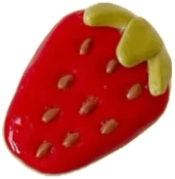
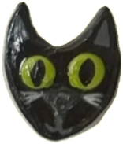

Thursday19November
Autumn meetup: show and tell
Three short talks, an open show-and-tell and plenty of time to chat. Bring something you're working on, finished or not.
Save my spotGlad you found us. We host meetups, critiques and good company for anyone who designs anything.
Come say hi

Short talks, show-and-tell and snacks, once a month.
Bring work in progress and get kind, useful feedback.
Hands-on sessions on tools, methods and craft.
A look inside design studios and teams around Tampere.
Three short talks, an open show-and-tell and plenty of time to chat. Bring something you're working on, finished or not.
Save my spotSomething else on your mind? Ask us at the next meetup or send us a message.
Anyone who designs anything: UX and UI, graphic, service, industrial, students, career switchers and the design-curious.
No. Come as you are. Half-finished ideas are welcome, and so is just listening.
Meetups are free. If a workshop ever needs a small fee for materials, we say so up front.
Mostly English, so everyone can follow along. Finnish is always welcome over coffee afterwards.
Follow us on Instagram or join the mailing list. We post each event at least two weeks ahead.
Yes, please. Tell us your idea at a meetup or send us a message, and we'll help you shape it.